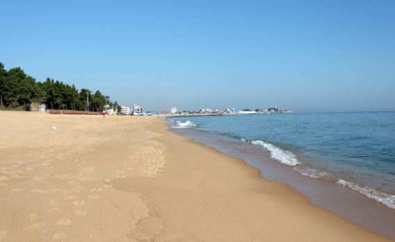
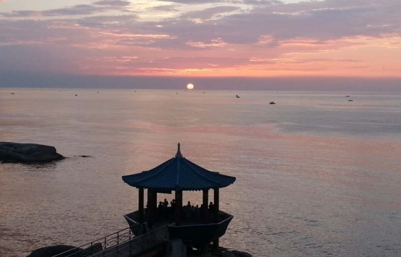
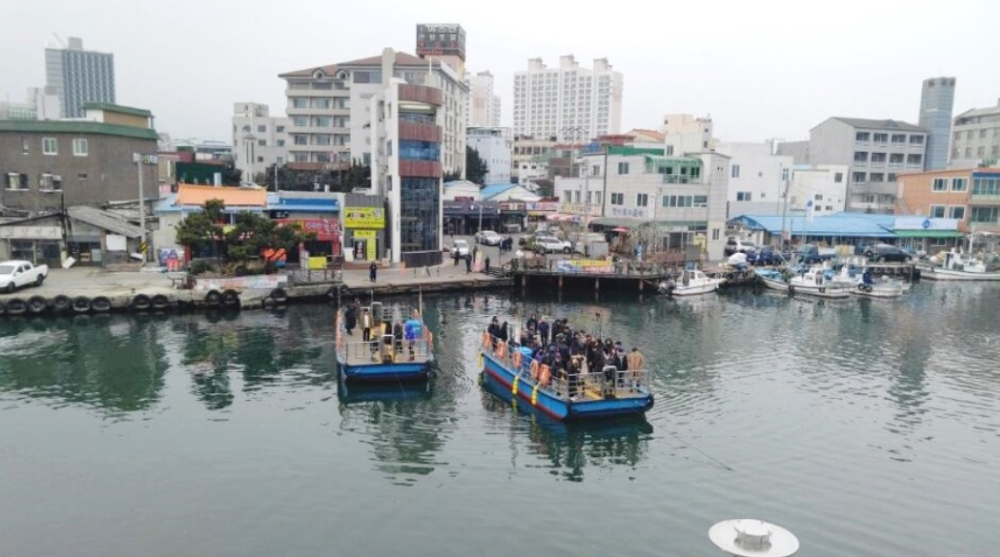
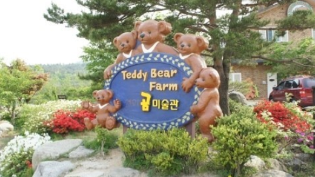
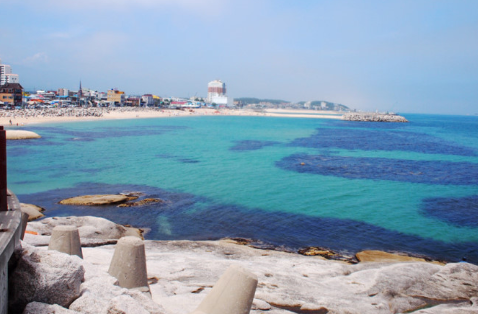
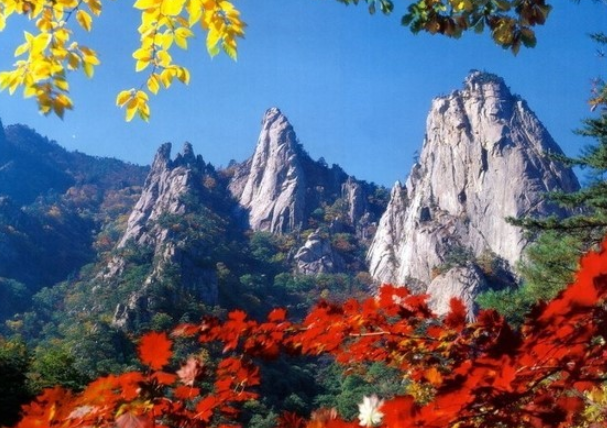
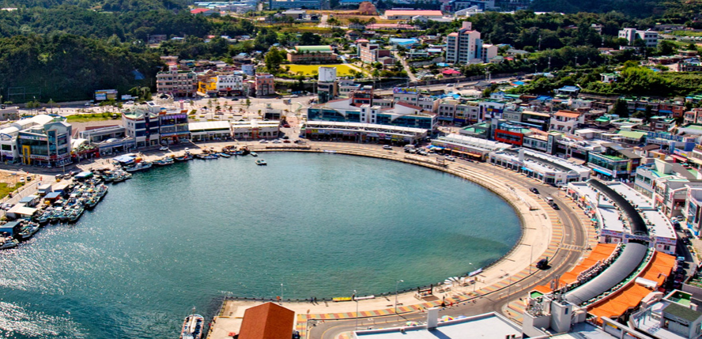
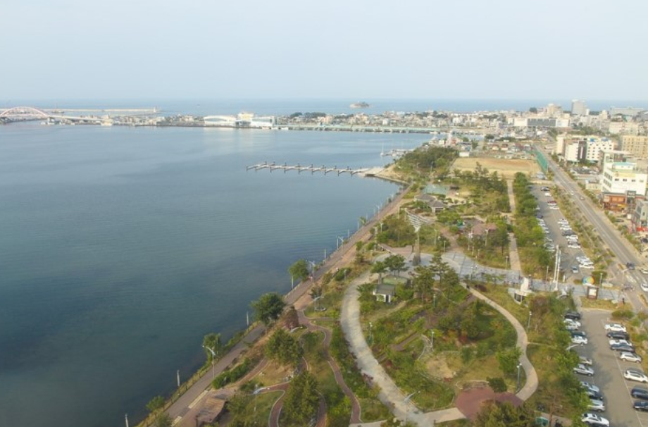
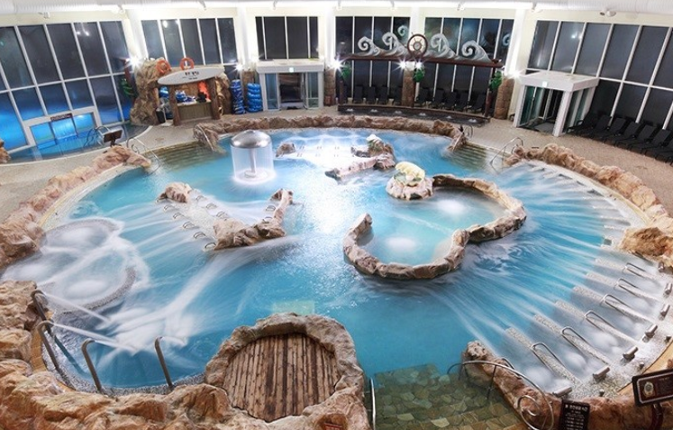

속초 해수욕장
위치 : 강원 속초시 조양동 속초해수욕장 [클릭!]
운영시간 : 매일 06:00 - 24:00(09:00-18:00 입수가능)
가격 : 무료
Tip 속초시내에 가깝고 수질이 깨끗하여 동해안에서 인기가 많으며 인근에 숙박 및 식당이 밀집되어 있습니다.!

영금정
위치 : 강원도 속초시 영금정로 43 [클릭!]
운영시간 : 매일 04:30 - 23:00
가격 : 무료
Tip
아기자기한 해변 경관을 감상할 수 있다.
약 50m 길이의 구름다리를 건너면 바다와 마주할 수 있는 속초 영금정.
일출 명소로도 알려진 이곳은 동해안의 시원한 절경을 감상할 수 있는 최적의 장소이다.

아바이 마을
위치 : 강원도 속초시 청호로 122 [클릭!] 운영시간 : 매일 06:00 - 24:00
가격 : 소인 : 300원 | 대인 : 500원 | 손수레,자전거 500원(편도기준)
Tip
갯배 체험이 가능 및 포토존이 있습니다.
일출 명소인 청호래변과 설악&금강대교와 연결되어 있으며 주변 식당에서 식사 후 영수증 지참 시 까페 메뉴 할인가능

테디베어 팜
위치 : 강원도 속초시 학사평2길 16 [클릭!] 운영시간 : 매일 10:00 - 18:00(화요일 휴무)
가격 : 성인 7,000원 | 청소년 5,000원 | 어린이 3,000원
Tip
단체 및 장애인,군인 할인 가능!
각종 다양한 포토존과 볼거리가 많아 아이들과 오기 좋습니다.

등대해수욕장
위치 :강원 속초시 영랑동 [클릭!] 운영시간 : 매일 06:00 - 24:00(09:00-18:00 입수가능)
가격 : 무료(샤워실 별도)
Tip
주변 해수욕장보다 다소 한적한 편이라 조용한 휴가를 즐기는 사람들에게 적당하며
여름 외에도 주변에 관광지를 둘러보기 좋고 교통이 편리하다

설악산
위치 : 강원도 속초시 설악산로 1137 [클릭!] 운영시간 : 전날 운행시간 공고 홈페이지로 이동하기
가격 : 대인(중학생 이상)10,000원 | 소인(37개월~초등학생)6,000원 | 유아(36개월 이하)무료 [왕복기준]
Tip
봄에는 진달래, 여름엔 신록, 가을엔 단풍, 겨울엔 설경으로 연중 어느때나 설악의 장엄함과 신비함을 보실 수 있습니다.

대포항
위치 : 강원 속초시 대포동 [클릭!] 영업시간 : 별도
Tip
아름다운 자연의 조화와 싱싱하고 신선한 생선, 각종 먹거리를 즐길 수 있다.속초시에서 차로 10분거리

청초호
위치 : 강원 속초시 청호동 [클릭!] 가격 : 무료
Tip
주변 관광자랑 가까우며 낮에는 자전거 대여 밤에는 산책하기 좋습니다.

설악 워터피아
위치 : 강원도 속초시 미시령로2983번길 111 [클릭!] 운영시간 : 매일 10:00 - 20:30(종일권) | 16:00 - 20:30(오후권) | 19:00 - 20:30(야간권)
가격 : 종일권 소인(36개월 미만 무료)47,000원 | 종일권 대인(중학생이상)60,000원
오후권 소인39:500원 | 오후권 대인51:000원 | 야갼권 소인23,500원 | 야간권 대인30,000원
Tip
다양한 놀거리 먹거리를 이용 할 수 있고 근처에 숙소가 있어 편리합니다.
이용권은 각종 인터넷 사이트에서 예매 시 훨씬 저렴하게 이용가능!